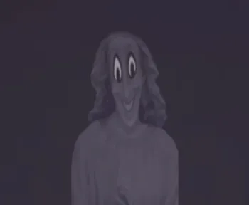

Mandela Catalogue
Criador: Alex kister
Mandela catalogue é um analog horror que aborda ataques no condado de mandela por doppelgangers (sósias), mais conhecidos como alternates, onde um corpo cometido suicidio, eles ganham tal forma física.
fonte: Analises e conteudos do Youtube video: Overthrone